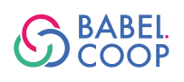

## FlossLand <span id='bright'>Connaître | Choisir | Construire | Contribuer</span> <br/>  <div style="font-size: 40px; text-align: center;"> <br/> <!--  enlever deux br--> Samir Saidani<br/> <a href="mailto:samir.saidani@babel.coop">📧</a> </div> --- # Connaître  <!-- .element style="border: 0; background: None; box-shadow: None" width="100px" --> Notes: aborder ici la philosophie de l'ensemble, la motivation profonde, l'historique, et en entonnoir, aller vers les solutions spécifiques... Interactivité à proposer. Se connaître Présentation opensource, réfléchissez à son amélioration ! -v- # Introduction à l'OSS -v- ## LL + OSS = FLOSS * OSS: OpenSource Software * LL : Logiciels Libres * FLOSS : Free/Libre OpenSource Software * Philosophie FLOSS * Histoire * Leaders * Modèle économique Notes: pas un shareware, pas l'idée de gratuit, on donne la recette de cuisine... Photo satellite Un écosystème de milliers de logiciels rajouter une carte face à ce foisonnement, on peut être perdu -v- ## Philosophie <div style="font-size: 58px"> > I consider that the golden rule requires that <span id="bright">if I like a program I > must share it with other people who like it</span>. I cannot in good > conscience sign a nondisclosure agreement or a software license > agreement. <br/> -- Richard Stallman, [1983](https://groups.google.com/group/net.unix-wizards/msg/4dadd63a976019d7) </div> -v- ## Histoire * GNU is Not Unix (GNU) (1983) * Linux (1991) * Slackware (1992), Debian (1993) -v- ## Linux <div style="font-size: 48px"> > I'm doing a <span id="bright">(free) operating system (just a hobby, won't be big and professional</span> like gnu) for 386(486) AT clones. [...] > PS. Yes - it's free of any minix code, and it has a multi-threaded fs. It is <span id="bright">NOT portable</span> (uses 386 task switching etc), and it probably <span id="bright">never will support anything other than AT-harddisks</span>, as that's all I have :-(. <br/> -- Linus Torvalds, 1991 </div> -v- ## Leaders * Richard Stallman - GNU, FSF * Eric Raymond - OSS * Linus Torvalds - Linux * Bruce Perens - Debian, OSI * Lawrence Lessig - CC -v- ## Open-Source Ecosystem Leaders - **Linux Distributors**: - Red Hat (IBM, RHEL, OpenShift) - Canonical (Ubuntu, MAAS, Juju) - SUSE (SLE, Rancher) - **Open-Source Platforms**: - GitLab (DevOps, CI/CD) - Mozilla (Firefox, web standards) - Automattic (Wordpress) - **Databases**: - Oracle (MySQL, OpenJDK) Notes: CentOS une compilation communautaire de RHEL (Enterprise Linux) Fedora la distrib opensource de RH Oracle Linux compile de RHEL -v- ## Modèle économique <div style="font-size: 58px"> > Software is largely a <span id="bright">service industry</span> > operating under the persistent but unfounded delusion that it is a manufacturing industry. <br/> -- Eric S. Raymond </div> Notes: → Software as a Product vs Software as a Service -v- # Modèle économique <div style="font-size: 58px"> > <span id="bright">Libre n'est pas gratuit.</span> </div> -v- # Le Copyleft -v- ## Les Quatre Libertés du LL * Liberté d'exécuter le logiciel * Liberté d'étudier le logiciel * Liberté de redistribuer le logiciel * Liberté de distribuer les modifications du logiciel -v- ## Logiciel libre * Principe du LL * Exemple : licence GNU GPL * La licence AGPL vs GPL * Et les autres... -v- ## Logiciels opensource * Principe de l'OSS * Exemple : licence MIT * Et les autres... Notes: Principe juridique Viralité ou non viralité des licences -v- ## Paradoxe du Copyleft * [Matrice de compatibilité](https://fr.wikipedia.org/wiki/Liste_de_licences_libres) -v- ## Licences de contenus * Principe * Culture libre : Wikipedia, OSM, etc. * Licence CC * Licence OI -v- # Catalogue Notes: Apprendre à pêcher, plutôt que donner un poisson -v- ## Catalogue FLOSS <div style="font-size: 48px"> > Visiter les sites de curation des logiciels opensource. </div> * 4 Types : Desktop/Mobile/Serveur/Webapp * Framalibre * Linuxfr.org * Wikipedia * Opensource.com Notes: éviter directory.fsf.org listes non exhaustive... dépôt de code pour approfondir... Degré 0 : moteur de recherche quand on est desespéré... -v- ## Les webapps * Applications client/serveur * Catalogue plus restreint * ex : framalibre webapps -v- ### Catalogue de webapps FLOSS <div style="font-size: 48px"> > Visiter les catalogues des solutions de déploiement de webapp floss </div> * [Cloudron](https://cloudron.io) * [IndieHoster](https://indiehoster.) * [DigitalOcean](https://marketplace.digitalocean.com/category/all) * [Bitnami](https://bitnami.com) Note: Atelier modification des liens http -v- # Visite guidée -v- ### La messagerie instantanée * Rocketchat * Mattermost * Matrix -v- ### Sécurité * OpenSSH <span id='bright'>\*\*\* </span> * OWASP Guides * nmap, iptables, metasploit... * OPAL HW encryption vs luks SW encryption * La tendance E2EE -v- ### Supervision * Nagios vs Icinga (old school) * Prometheus (TSDB) * InfluxDB (TSDB) -v- ### Annuaire & ID * OpenLDAP * FreeIPA (Red Hat) = AD * Fédération d'Identités * OpenID vs OAuth2 vs SAML * Keycloak (Red Hat sponsor) <span id='bright'>\*\*\* </span> -v- ### Framework dev * React (Facebook) - ⇒ * Angular (Google) - ⇘ * Vuejs - ⇗ * Dart/Flutter (Google) * et les autres... Note: Angular pour Javascript (from Google) Spring pour Java Symphony pour PHP -v- ### Ticketing & Inventaire * Redmine * OpenProject * OCSInventory * GLPI * Snipe-IT Note: Orienté agile, Phabricator -v- ### Divers * Webmail (roundcube, rainloop, etc.) * Groupware (Sogo, Nextcloud, Zoho, Kolab, etc.) * Navigation (Firefox, Chromium, Opera, etc) * Et des milliers d'autres solutions... -v- # Atelier -v- ### Quizz 1. La licence de Wikipedia ? <p class="fragment">BY-SA</p> 2. La licence de MediaWiki ? <p class="fragment">GNU GPL</p> 3. La licence de cuisine-libre ? <p class="fragment">Divers</p> 4. La licence de RocketChat ? <p class="fragment">MIT</p> -v- ### Quizz <div style="font-size: 48px"> > Quelle est la différence entre l'AGPL et la GPL ? </div> -v- <!-- ### Réseau social d'entreprise <div style="font-size: 48px"> > Un client vous demande de lui installer une solution opensource de réseau social d'entreprise. </div> * Trouvez trois solutions réseaux sociaux opensource * Faites une fiche récapitulative * Notez chaque logiciel de 1 à 3 étoiles --> ### Visio-conférence <div style="font-size: 48px"> > Projet : installer une solution opensource de visio-conférence pour votre organisation. </div> * Trouvez trois solutions de visio-conférence open source * Faites une fiche récapitulative * Notez chaque logiciel de 1 à 3. Note: --- # Choisir  <!-- .element style="border: 0; background: None; box-shadow: None" width="100px" --> -v- ## Les Fleurons du FLOSS * Linux / Ubuntu * Firefox * LibreOffice * LAMP * OpenSSH * Bitcoin, Blender, etc. -v- # Les Communs FLOSS -v- ## Définition d'un Commun Numérique - Communauté - Code = la ressource commune - Gouvernance Notes: * Commun ~ République * Une Communauté : histoire, coutumes... * Un Code : logiciels, documentation... * Une gouvernance : leadership, roadmap, code de conduite... * Un projet : gestion de projet, processus contributif, guide de contribution... * Un modèle économique : dons, sponsors, support premium... -v- ## Choisir un Commun On ne choisit pas un logiciel.<br/> *On choisit un Commun*. <div style="font-size: 48px"> > Choisir un Commun <span id='bright'>vivant</span> **et** <span id='bright'>durable</span>. </div> Notes: Le choix n'est pas une science exacte * L'arbre qui cache la forêt -v- # Indicateurs -v- ### La Communauté - Structure de la Communauté, ses parties-prenantes - Taille de la Communauté, ses membres actifs - Vitalité de la Communauté, son activité, sa réactivité Notes: Lien éventuel avec une entreprise -v- ### Le Code - Licence - nombre de développeurs - nombre de commits - rapport ticket ouvert/ticket fermé - cycle de diffusion - processus qualité du code : tests, revue de code - outil de gestion de projets : github, gitlab... - intégration continue - existence et qualité de la documentation -v- ### La Gouvernance - Leadership : personnes physiques ou morales ? - Type : dictature, oligarchie, démocratie ? - Clarté : charte ? feuille de route ? -v- ### Le processus contributif - Guide de contribution - Difficulté de contribution : cf PR (Pull Request) - Code de Conduite - Budget contributif : bounty -v- ### Le modèle économique - Communauté & Entreprise - Crowdfunding. Ex : patreon - Open Core : CE & EE - App Store. Ex : odoo - Donations, sponsoring - Commonware -v- ## Le Commun Rocket.Chat ### Étude de cas -v- ### Rocket.chat #### Visite guidée - Communauté - Code - Gouvernance - Modèle économique -v- # Atelier -v- ### Dossier de choix <div style="font-size: 48px"> > Vous voulez choisir une application webapp messagerie instantanée.</br> Objectif : <span id='bright'>construire votre propre dossier de choix</span> en vous basant sur les indicateurs proposés </div> * Faire un tableau avec vos indicateurs * Évaluez les solutions identifiées dans le premier atelier --- # Construire  <!-- .element style="border: 0; background: None; box-shadow: None" width="100px" --> -v- ## Tester une webapp 0. ~~Installer la solution complète sur son serveur~~ 0. Visionner une vidéo UX de la webapp 1. Trouver une démo à tester sur internet 2. Utiliser une offre freemium 3. Installer une solution type conteneur -v- ## UX : indicateur clé * Importance de l'UX * UX du point de vue utilisateur * UX du point de vue administrateur -v- ## Tester une webapp <div style="font-size: 48px"> > Tester <span id='bright'>l'UX</span> d'une <span id='bright'>seule webapp</span> sur une durée <span id='bright'>limitée</span> par > les <span id='bright'>vrais utilisateurs</span> dans un <span id='bright'>vrai cas d'usage</span>. </div> * Du point de vue utilisateur * Du point de vue administrateur Note: -v- # Atelier -v- ### Tester une webapp <div style="font-size: 48px"> > Completez votre dossier de choix avec une note UX.</br> Objectif : <span id='bright'>finaliser votre dossier de choix</span> avant de proposer à vos utilisateurs de tester la solution retenue. </div> -v- ### Installer votre webapp <div style="font-size: 48px"> > Déployez la webapp choisie dans une solution <span id='bright'>type conteneur</span>. </div> --- # Contribuer  <!-- .element style="border: 0; background: None; box-shadow: None" width="100px" --> -v- # Dépôts de code * Github * Gitlab * Sourceforge -v- # Github * Visite guidée de Github * Comment contribuer ? * Prise en main -v- # Atelier -v- ### Contribuer à FLOSSLand <div style="font-size: 48px"> > Contribuez à FLOSSLand en <span id='bright'>proposant une amélioration</span> sur le [dépôt github](https://github.com/SamirSaidani/flossland). </div> * Décrivez votre proposition via un nouveau ticket en anglais. <style> #bright { color: deeppink; } #left { margin: 10px 0 15px 20px; text-align: center; float: left; z-index:-10; width:400px; font-size: 0.85em; line-height: 1.5; } #right { margin: 40px 0 15px 0px; float: right; text-align: center; z-index:-10; width:400px; font-size: 0.85em; line-height: 1.5; } #dark_back { background-color: rgba(0, 0, 0, 0.9); color: #fff; padding: 20px; } </style>